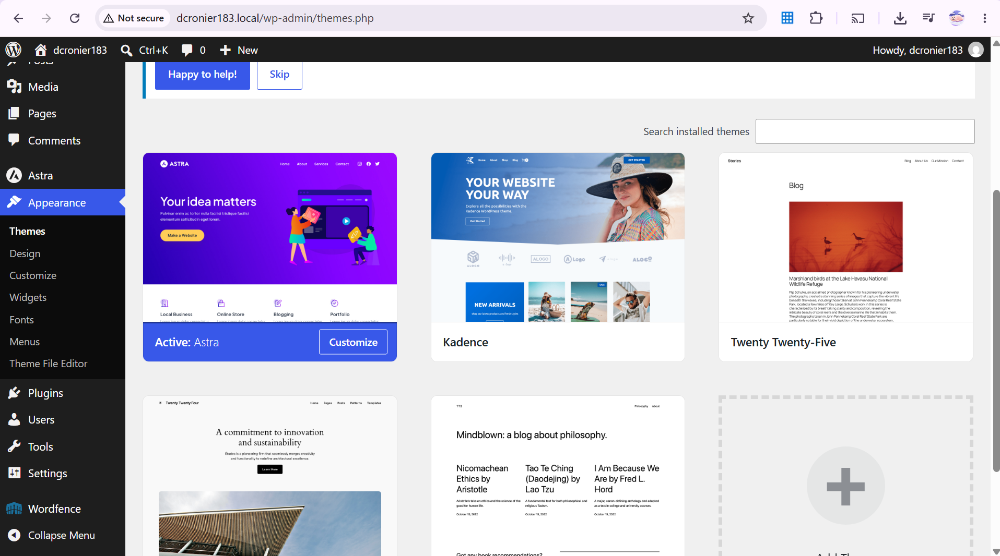

Dominique Cronier
October 12, 2026
For this activity I installed and activated the Astra theme and the Wordfence Security plugin. I chose Astra because I liked the layout and it's pretty simple yet has many customization options. Its customization options let me adjust the global colors, container width, preset and base font, and footer which changed the look of the site by giving it a warmer rose colored theme, a wider layout that fills more of the screen, new fonts, and a personalized footer instead of the default. I chose Wordfence Security because it adds firewall protection and malware scanning that WordPress doesn't include. After activating it, Wordfence added a new section to the dashboard sidebar with firewall settings, a malware scanner, and a log of login attempts. This extended the site by adding security monitoring and firewall protection that WorldPress doesn't have by default.
